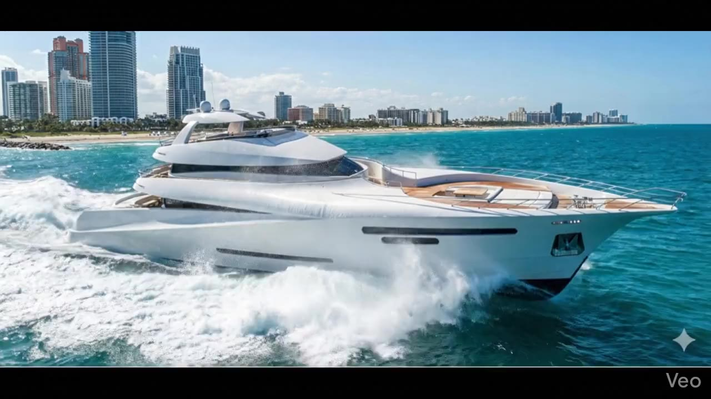
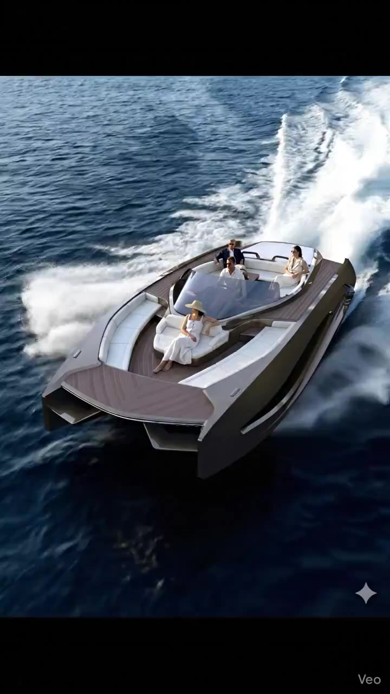
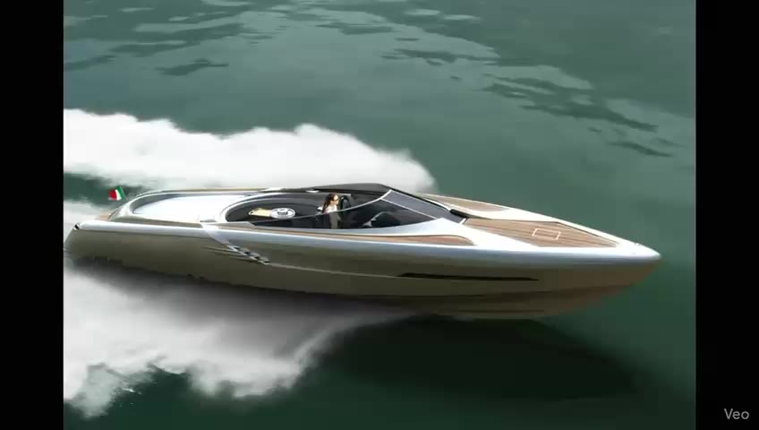
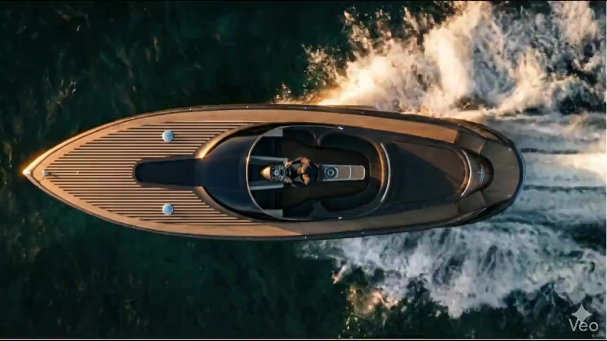
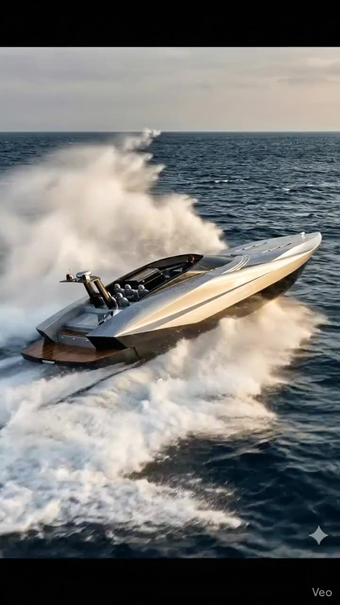

La Collezione / 05 · Gran Marlin
Gran Marlin
L'Anima del Mare Aperto.
A Different Kind of Freedom
Gran Marlin originates in a large motor-yacht study that translated the character of the classic sportfisherman into a more architectural, contemporary form. It introduces a distinct open-water perspective to the developing VELLARIO collection.
LA COLLEZIONE / Gran Marlin
Il Concept
The original Gran Marlin 46 concept began with an intriguing question: what happens when the sporting identity of a fisherman yacht is translated into the proportions and spaces of a much larger motor yacht? Its answer combined recognisable references with a cleaner architectural expression. Gran Marlin remains the working VELLARIO collection name, not a transfer of historic technical certifications.
LA COLLEZIONE / Gran Marlin
Le Linee
The archival design preserved references such as an elongated bow pulpit while shifting major volumes towards the stern. That decision was intended to free generous space forward and offer a new relationship between the yacht's sporting lineage and its social life. This dialogue between recognisable nautical character and contemporary architecture is central to the study.
LA COLLEZIONE / Gran Marlin
La Vita a Bordo
The original proposal explored a generous social area forward, a more private organisation of the owner's accommodation and a carefully considered separation of guest and service spaces. These are design concepts documented in the historical archive, not a description of a completed or equipped VELLARIO yacht.
LA COLLEZIONE / Gran Marlin
Dettagli & Materiali
A particularly distinctive idea in the source study was the relocation of the tender garage towards the centre of the yacht, allowing the aft area a closer relationship with the water. This is the kind of decision that interests VELLARIO: technical planning considered for the human experience it could make possible.
LA COLLEZIONE / Gran Marlin
Dati Tecnici
The source Gran Marlin 46 was a large motor-yacht concept. Its original dimensions and classifications are not current VELLARIO production claims.
Galleria
Original Gran Marlin design archive imagery, reflecting the project's authentic offshore inspiration and original scale.


UN INVITO PERSONALE
Contatti
A direct introduction channel will appear alongside the future verified commercial information.
CONTATTIDiscover the Collection.

LA COLLEZIONE 01 / 05Quantum 999Una Linea. Un Carattere.↗
LA COLLEZIONE 02 / 05MAS 36Lo Spirito del Gran Turismo.↗
LA COLLEZIONE 03 / 05MAS 56Eleganza in Movimento.↗
LA COLLEZIONE 04 / 05GranTender 72Presenza. Movimento. Libertà.↗LA COLLEZIONE 05 / 05Gran MarlinL'Anima del Mare Aperto.↗